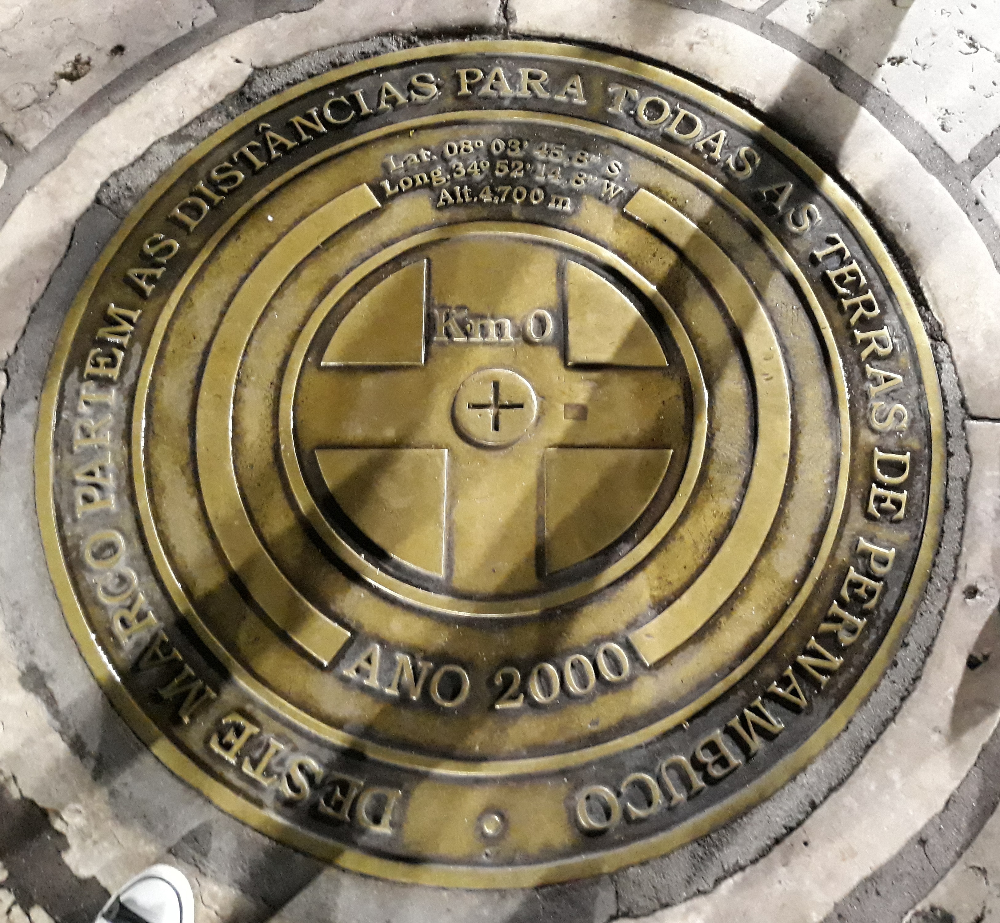
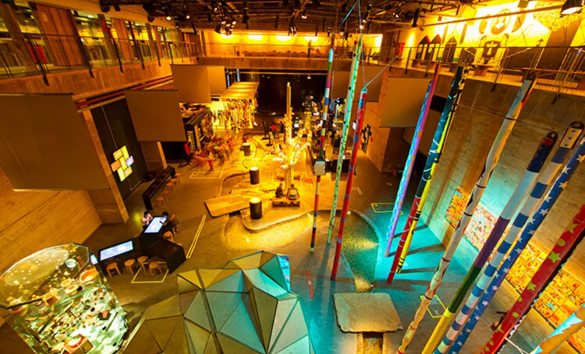
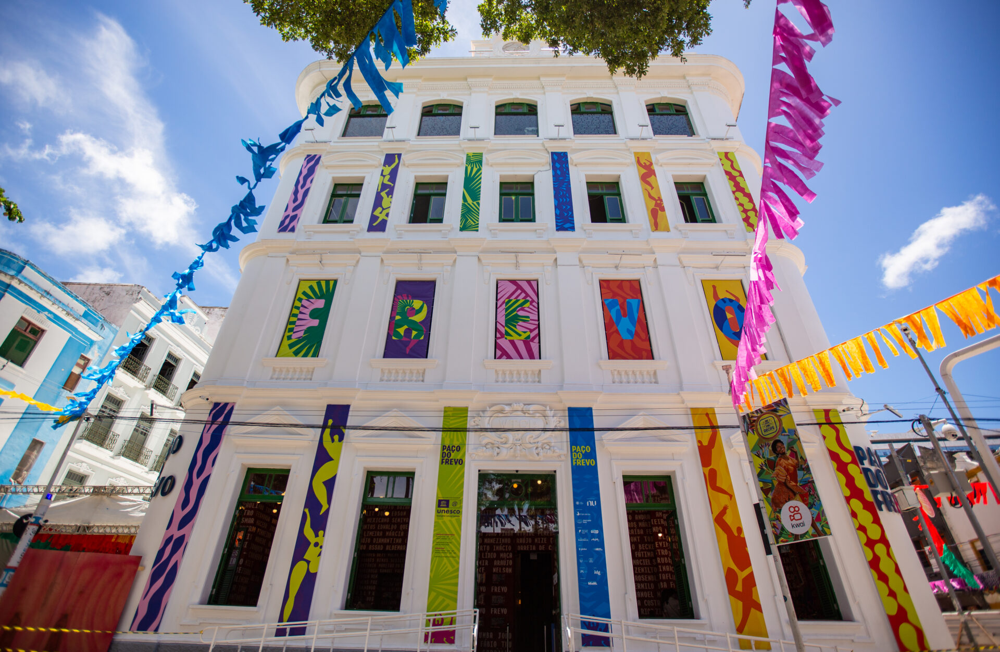
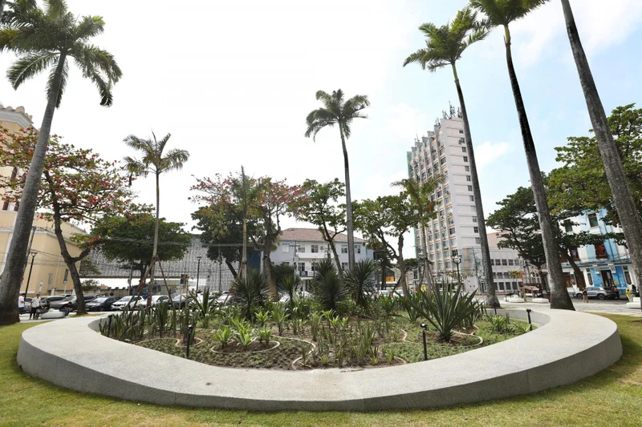
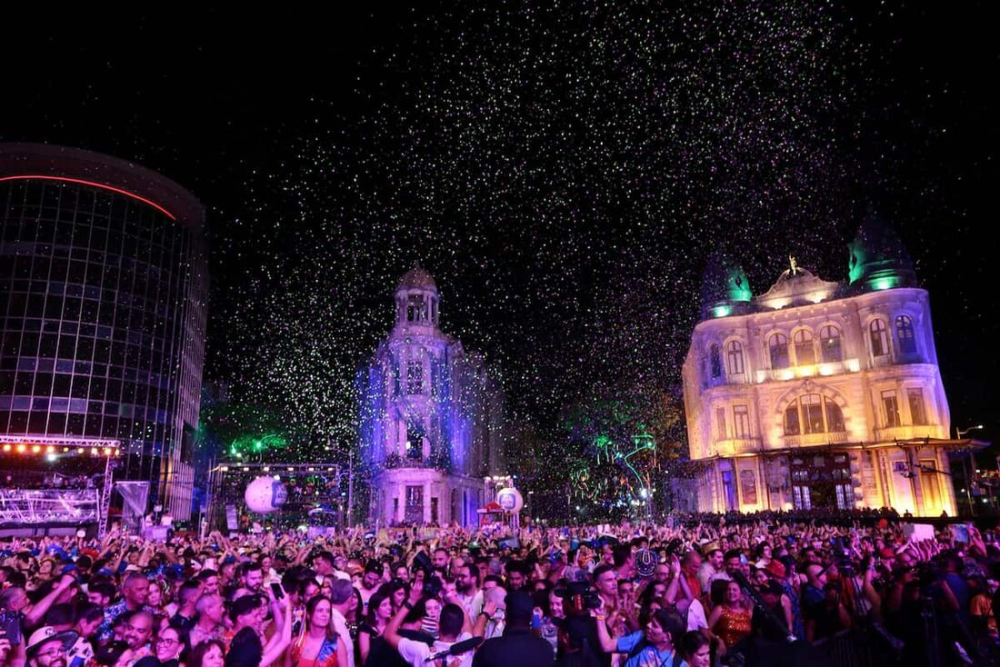
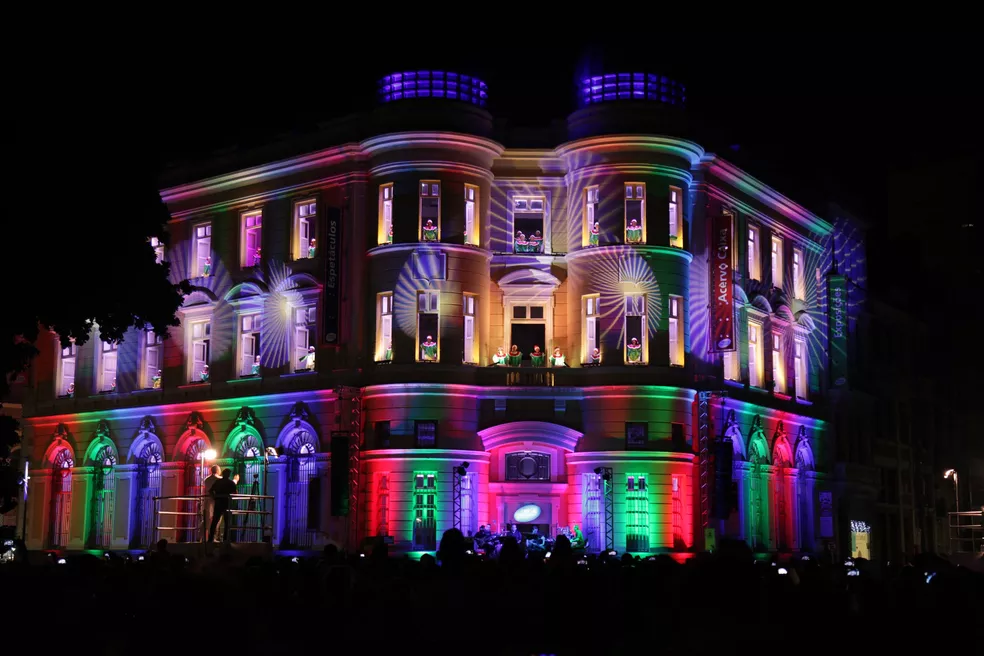

O que é o Marco Zero?
O Marco Zero é um monumento localizado no Recife, Pernambuco, Brasil. Ele marca o ponto de origem da cidade e é um dos principais cartões postais do Recife. O monumento é composto por uma estrutura de ferro e concreto, com uma placa que indica a distância para várias cidades ao redor do mundo.

Atrações turísticas no Marco Zero
Além de ser um ponto histórico, o Marco Zero é cercado por diversas atrações turísticas, como o Museu Cais do Sertão, o Paço do Frevo e a Praça do Arsenal. A região também é conhecida por sua vida noturna vibrante, com bares e restaurantes que oferecem uma variedade de opções gastronômicas.



Eventos no Marco Zero
O Marco Zero é palco de diversos eventos culturais ao longo do ano, incluindo festivais de música, feiras de artesanato e celebrações tradicionais. Durante o Carnaval, a área se transforma em um dos principais pontos de festa, atraindo milhares de foliões para as ruas do Recife.

